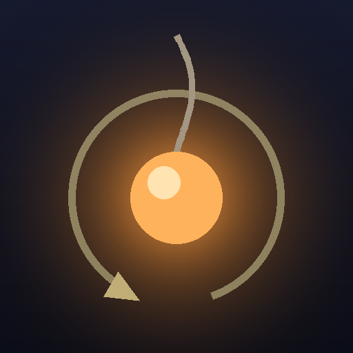
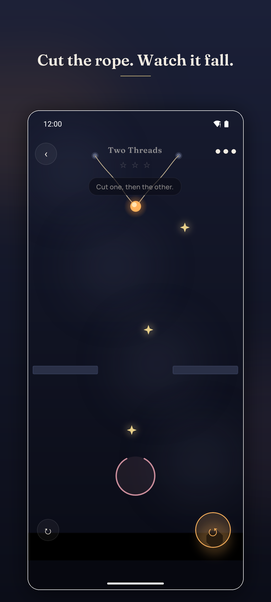
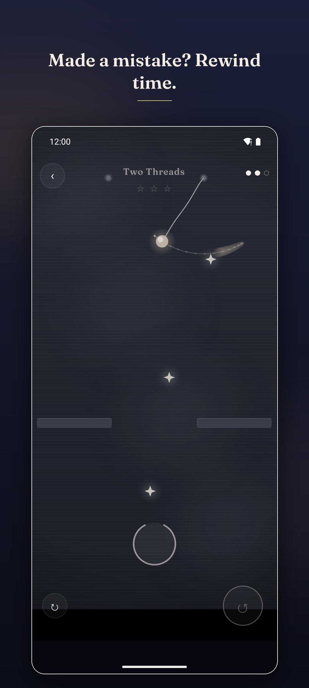
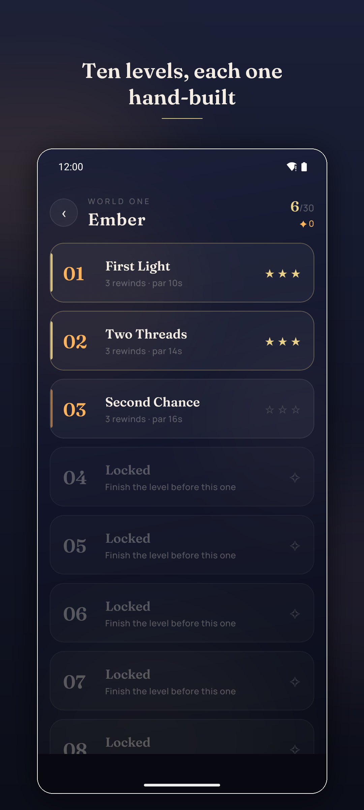

Rewind is a physics puzzle game for Android where you can reverse the last three seconds of play. Cut the ropes holding a glowing ball — the Ember — and land it in the vessel below. When a cut goes wrong, take it back instead of starting again.



Most rope-cutting puzzle games punish a bad cut by making you restart the level. Rewind hands the three seconds back instead. The Ember flies backwards along its own path, the rope you cut knits itself together, and you are standing in the moment before the mistake. A level stops being a plan you execute and becomes a conversation: cut, watch, reverse, cut better.
A free physics puzzle game for Android. You cut ropes to drop a glowing ball called the Ember into a target vessel, using gravity and momentum. Its defining feature is a rewind that reverses the last three seconds of play.
Pressing rewind reverses the last three seconds. The Ember flies backwards along its own path, ropes you cut reattach, and tokens you collected return. Play resumes from that earlier moment, so you can cut differently instead of restarting. Each level allows a limited number.
Yes to both. It is free to play and supported by ads, and works completely offline — no account, no sign-up, no connection required.
Ten, making up World One. Worlds two to four are in development, adding bouncers, moving platforms, air currents and portals.
Three separate conditions, each worth a star: complete the level, collect all three tokens in one run, and finish without using a rewind.